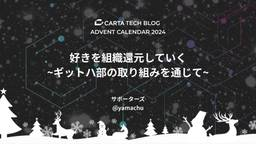

CARTA TECH BLOG
https://techblog.cartaholdings.co.jp/
CARTA HOLDINGS公式エンジニアブログです。CARTA HOLDINGSのエンジニアリング関連の情報、 イベント, エンジニアたちの様子などを投稿しています。
フィード

うちの猫がkawaiiすぎるのでLGTM画像にしてみた話(S3 + Lambda + API Gateway + Text Blaze)
CARTA TECH BLOG
この記事は CARTA アドベントカレンダー2024の12月19日目の記事です！ はじめまして。株式会社DIGITALIO でエンジニアをしているキッチンです。 皆さん、普段レビューでLGTM画像 は使っていますか？ 「Looks Good To Me（LGTM）」のコメントに画像を添えて送ってもらえると、なんだか嬉しい気持ちになりますよね。 さて、今回はうちの猫をLGTM画像にすることで、合法的(?)にうちの猫のかわいさをチームメンバーに見せつけていった話をお届けします！ 🐱✨ うちの猫について まずは、うちの愛猫を紹介させてください！ ノルウェージャンフォレストキャットの 「むく」 です😸…
12時間前

指が動けばコードはかけるのか！？ 2
2
CARTA TECH BLOG
この記事は CARTA TECH BLOG アドベントカレンダー2024 の12/18の記事です。 こんにちは、Lighthouse Studio エンジニアののざです。 スキーやスノーボード、マウンテンバイクなど非日常を味わえるスリリングなスポーツって楽しいですよね！！ しかしながらスリルには怪我がつきものです。 同僚から普段「怪我しないで帰ってきてね」とよく心配されるのですが、明るく「指が動けばコードは書けるから大丈夫！」と返していました。 これまでは怪我をせずに楽しんでいたのですが、今年の11月ついに右手の親指を骨折してしまいました。 そこで「指が動けばコードが書けるのか」、この説を検証…
1日前

ADR 導入・運用時に取り組んだこと 3
CARTA TECH BLOG
はじめに この記事は CARTA アドベントカレンダー2024まとめ - CARTA TECH BLOG の 12/17 の記事です！ はじめまして。株式会社DIGITALIO でエンジニアをしている mittsu です。 私が所属するチームでは今年の7月頃から ADR（Architecture Decision Record）を利用しています。 ADR とは、「アーキテクチャ決定を文書化する最も効果的な方法の1つ」であり、意思決定の背景や理由を明確に残す仕組みを提供します。 「引用元: O'Reilly Japan - ソフトウェアアーキテクチャの基礎」 基本的な ADR の構造は以下の通り…
2日前

CTOの1週間──技術、組織、そして仕組み化のサイクル 56
CARTA TECH BLOG
この記事は CARTA TECH BLOG アドベントカレンダー2024 の 12/16 の記事です。 CTOのsuzukenです。 新卒面接も増え、「CARTAのCTOって普段何してるんですか」と面接で聞かれることも増える時期になりました。今日はCTOとしてエンジニア組織やテクノロジーに関連し、概ね週ごとにやっていることをゆるくまとめてみました。参考になれば幸いです。フィードバック・コメントもお待ちしてます！ 前提は以下のとおりです。 CARTA CTO = ホールディングスの全社CTOのこと。事業会社にはそれぞれCTOやテックリードが別にいます。 CTOのミッションを一言で表すと、テクノロ…
3日前

「俯瞰してみてみる」で考えてみる！ ～プロジェクトと晩御飯の共通点〜 1
CARTA TECH BLOG
この記事は CARTA TECH BLOG アドベントカレンダー2024 の 12/15 の記事です。 こんにちは、CCIの @maekenです！ いきなりですが、少し趣向を変えた記事をお届けします。 我が家の晩御飯！ 子ども2人の夕食は毎回、小さな交渉合戦。 一人は「野菜いらない！」、もう一人は「これ絶対食べたくない！」まるで、複数のステークホルダーと調整するプロジェクトみたいです（笑） 全ての要望を受け入れた状況にしていくことはとても困難ですよね。 「俯瞰してみてみる」から見えてくるものがある 仕事で面白い・勉強になるなって思った最近の出来事です。 CARTAには部署の垣根を越えて相談する…
5日前

CARTA MARKETING FIRMのデータサイエンスエンジニアの生態を覗いてみましょう
CARTA TECH BLOG
この記事はCARTA TECH BLOGアドベントカレンダー12/14の記事です。 こんにちは！CARTA MARKETING FIRMでデータサイエンスエンジニアをやっているsakakey(さかきー)と申します！ 今回は、タイトルにある通り、「CARTA MARKETING FIRMでのデータサイエンスエンジニアの生態」について書いていきます。 というのも、社内での人数が少ないこともあり、データサイエンスエンジニアの仕事というのは意外と周知されていないと感じています。 なので、この記事ではそんなデータサイエンスエンジニアが、どう言った背景でどういう仕事をしているのか、僕が携わったタスクを軸に…
6日前

手を動かす前にチームに相談して手戻りを減らす 1
CARTA TECH BLOG
この記事は CARTA TECH BLOG アドベントカレンダー2024 の 12/13 の記事です。 Lighthouse Studio でエンジニアをしている yoko です。この記事では、自分が実践している手戻りを減らして効率的に仕事を進めるための工夫について紹介します。 何かしらの仕事に対して、手戻りが発生したことはありませんか？エンジニアであれば実装を終えて自信を持って PR を出した時に「解決法が違わないか？そもそも解くべき課題は本当にこれなのか？」とレビューアーに指摘されるなどです。 この記事では、この手戻りを減らす工夫について話していきます。 手戻りとは？ この記事では手戻りを…
7日前

好きを組織還元していく~ギットハ部の取り組みを通じて~ 3
CARTA TECH BLOG
アイキャッチ画像 この記事は CARTA TECH BLOG アドベントカレンダー2024 の 12/12 の記事です。 サポーターズでエンジニアをしている@y_chu5です。 私はGitHubというサービスが大好きで、DashboardのLatest changesをワクワクしながら眺めるのが日課となっています。 そんな私が、社の仮想組織であるギットハ部に「GitHubが好きだから！」という理由で参加して、どう全社のGitHubの運用に携わっていったかを紹介します。 また弊社のギットハ部のような、全社で採用しているサービスを実際に使っているエンジニアたちが管理する体制のススメについても触れて…
7日前

新卒4年目が先輩から学んだ仕事のやり方
CARTA TECH BLOG
この記事は CARTA TECH BLOG アドベントカレンダー2024 の 12/11 の記事です。 fluct でエンジニアをしているまきたけです。 私はfluct開発部部長との対話の中で、第一線で活躍するエンジニアたちが何を考え、どう仕事と向き合っているのかを学ぶことができました。 今回はアドベントカレンダーにかこつけてその学びを書き起こしておこうと思います。 少しずつでもとにかくやる 作業の進め方に自信がなくても、自分の作業がどこへ繋がるのかはっきりわからなくても、とにかく手を動かしましょう。 少しずつでも進捗を出し続ければどこにつくかはわからなくてもどこかには必ずたどり着きます。 墓…
8日前
E-inkディスプレイ搭載のM5Paperで今週の献立表を作ってみた
CARTA TECH BLOG
この記事は CARTA TECH BLOG アドベントカレンダー2024 の 12/10 の記事です！ DIGITALIOでエンジニアをしているguriです。 気になっていたけどなかなか触れていなかった技術をアドベントカレンダーの機会を活かして触ってみる「アドベントカレンダー駆動開発」として、今年はE-inkディスプレイ搭載のM5Paperを使って今週の献立を表示するデバイスを作成してみました。 我が家では、大体毎週末に一週間分の献立をホワイトボードに作成し冷蔵庫に掛けておくという形になっており、これを手に入れたM5Paperで置き換えたいという算段です。 さっそくですが、完成系はこのようにな…
10日前
CARTAでのO’Reilly Online Learningの導入について
CARTA TECH BLOG
この記事は CARTA TECH BLOG アドベントカレンダー2024 の 12/9 の記事です。 CTOのsuzukenです。 私のCARTAにおけるミッションの1つは、エンジニアが持続的に成長する環境を生み出し、事業成長を実現することです。技術は日々進歩しており、エンジニアが常に新たな知見を吸収することが、顧客価値向上や事業競争力の源泉となっています。 CARTAではフルサイクルエンジニアリングによって事業における経験効率を向上させ、エンジニア一人ひとりの課題解決の力を持続して高めるよう取り組んでいます。「毎日試す」は経験の源泉です。また、技術力評価会によって、エンジニア同士が互いの成果…
10日前
部長になって実質1年経ったので振り返ってみる
CARTA TECH BLOG
この記事は CARTA TECH BLOG アドベントカレンダー2024 の 12/8 の記事です。 株式会社CARTA MARKETING FIRMでDSP(Demand-Side Platform)の開発をしている@wanimaru47です。 2023年10月からDSP部で部長をしています。部長になって早々、2ヶ月の育休に入ったため実質1年ぐらいが経過しました。部長になって1年の振り返りを書いてみました！去年はゴリゴリにソフトウェアエンジニアとして開発を進めてきた私ですが、現在はエンジニアリングマネージャーとしてチームの生産性やプロダクトの成長を考えている日々です。 DSP部は広告配信サー…
12日前
意思決定のタイミングを定例に合わせない
CARTA TECH BLOG
この記事はCARTA TECH BLOG アドベントカレンダー2024の12/7の記事です！ DIGITALIOでエンジニアをしているguriです。 VALUEにも「スピードは力。」とある通り、CARTAではユーザーに速く価値を届けることをとても大切にしています。 今日は私が最近仕事を進める中で意識していて、実感としても良さそうだなと思っていることについて書いてみようと思います。 意思決定のタイミングを定例に合わせない 何か相談事があったり意思決定に迷った時、あらかじめ予定された定例ミーティングなどを待たずに進められるように意識的に動くということをしています。 例えば、「んーちょっとここの設計…
13日前
小型モデル × ONNX Runtime：リアルタイム入札システム改善で学んだこと
CARTA TECH BLOG
この記事は CARTA TECH BLOG アドベントカレンダー2024 の 12/6 の記事です！ 株式会社CARTA MARKETING FIRMのDSPでエンジニアをしているmarching-cubeと申します。 ONNXランタイムへの移行 最近、本番環境のリアルタイム入札（RTB）サービスをONNXランタイムフレームワークに移行しました。 CARTA MARKETING FIRMが提供する入札モデルは、ロジスティック回帰や事前に訓練されたルックアップテーブルなど、小規模であっても慎重に設計された推定量を活用する機械学習推論サービスです。モデルサイズは最大で100KB未満で、一部のモデル…
13日前
「Tidy First?」 読書感想文
CARTA TECH BLOG
この記事は CARTA TECH BLOG アドベントカレンダー2024 の 12/5 の記事です。 fluctでエンジニアをしていますryuといいます。 「洋書を読む会」と題して、洋書を課題図書にした読書会を、弊社の技術コーチのt-wadaさんを交えて、毎週開催しています。 その会で、「Tidy First?」を読みました。 www.oreilly.com 今回は、その 「Tidy First?」の読書感想文です。 どんな本 著者は テスト駆動開発 や エクストリームプログラミング のKent Beck氏です。 まずTidyとは何？というと、日本語では整頓や整理という意味です。 整頓というと…
14日前
具体と抽象を意識したら仕事を進めやすくなった話
CARTA TECH BLOG
この記事は CARTA TECH BLOG アドベントカレンダー2024 の 12/4 の記事です！！ こんにちは！CARTA HOLDINGS の Lighthouse Studio という事業部で「神ゲー攻略」の開発を担当しているエンジニアの yoko です。今回は自分が3年目になって身につき始めた仕事のコツについて話します！具体と抽象を意識的に使い分けることで、より広い範囲の仕事を進めやすくなったという話です。 この記事の対象読者 新人という段階を超えてより広い仕事をするようになった人 具体と抽象を意識することでなぜ仕事を進めやすくなったのか？ 最初に結論を述べると「抽象度の異なる仕事に…
16日前
内定者アルバイトの受け入れをしたので振り返ってみた
CARTA TECH BLOG
はじめに こんにちは、CCIのakimotoです。 2023年10月～2024年3月と2024年6月～8月の期間にかけて、私が所属しているチームにて内定者の学生さんたちにアルバイトとして参加してもらう機会がありました。 今回は受け入れ時にどんなタスクを学生さん達に対応してもらったのかや、内定者アルバイトの受け入れを経て改めて感じたことなど、やってみて得た所感を記事にしていこうと思います。 本記事の対象読者 CCIのソフトウェアエンジニアが普段どんな仕事をしているのか興味がある人 アルバイトの学生さんにどんな仕事を体験してもらっているのか気になる人 ①受け入れ第1弾(2023年10月～2024年…
17日前
Slackで要件を書かずに「質問があります。詳細はスレッドに記載」をやめたほうがいい理由
CARTA TECH BLOG
Slackで「質問があります。詳細はスレッドに記載」をやめたほうがいい理由 この記事はCARTA TECH BLOGアドベントカレンダー12/2の記事です。 こんにちは。CARTA MARKETING FIRM でエンジニアをしている 前田@brtriver です。アドベントカレンダーということで、ちょうど最近社内のブログに書いた記事を、社内に限らずテキストコミュニケーションツールを使っている会社では似たようなことが起きているのではないかということで、軽くリライトしてアドベントカレンダーの記事にしたいと思います。 要件書かない「詳細はスレッドに記載」はパブリックに情報を共有する手段としてはイマ…
17日前
CARTA アドベントカレンダー2024まとめ
CARTA TECH BLOG
毎年、技術に問わずゆるーく記事を上げていっています。 ここはCARTA TECH BLOGアドベントカレンダーのまとめ記事です。 新しい記事が追加されるごとに更新していくので、気になる方は定期的にチェックみてくださいね！ こちらは去年の様子になります。 techblog.cartaholdings.co.jp 記事一覧 12月1日 techblog.cartaholdings.co.jp 12月2日 techblog.cartaholdings.co.jp 12月3日 techblog.cartaholdings.co.jp 12月4日 techblog.cartaholdings.co.jp…
17日前
自らの変化を自ら褒める
CARTA TECH BLOG
この記事はCARTA TECH BLOGアドベントカレンダー12/1の記事です。 こんにちは、技術広報のしゅーぞーです。今回は私が仕事や物事と向き合う時に気をつけていることを書きます！ 以前、自分用に書いた日記からの引用なので独白調です。それではどうぞ。 この記事の対象読者 理想に向かって自分を変えるタイプの人 自分の至らない部分だけを見つけてしまう人 成長実感を感じにくい人 自らの変化を自ら褒める 理想があり、それに追いつこうとする。苦戦して当初の理想に近づいていく。追いついた時点ではさらに良い理想が見える。 結果として当初理想に掲げていた状態に到達してもそれは当然のように思える。 どんなト…
18日前
リーンなソリューション開発を支えるためのデータ組織戦略
CARTA TECH BLOG
執筆者 2022年 CARTA HOLDINGSに入社。株式会社テレシーにて機械学習・ML Opsを主担当。現在、開発本部 データプランニングチーム リーダー。 はじめに はじめまして。株式会社テレシー でデータサイエンスエンジニアとして働いている ohyan (@ohyan) です。現在は、データプランニングチームのチームリーダーを兼務しており、データ基盤周りの開発を担当しています。 今回は、テレシーが推進するリーンなソリューション開発を支えるデータ組織戦略についてお話しします。 リーンなソリューション開発 まず、テレシー開発本部のミッションについてご紹介します。テレシーでは、企業の「マーケ…
1ヶ月前
GitHub DiscussionsにTipsを残す使い方をしてみた話
CARTA TECH BLOG
CARTA fluct エンジニア の なっかー @konsent_nakka です。 私のチームでは2024年7月ごろからGitHub Discussionsを運用しています。 運用の結果、感触が悪くなかったので共有がてら記事にしました。 GitHub Discussionsとは プロジェクトに関するコミュニティの共同コミュニケーションフォーラムです。 コミュニティメンバーは、質問をしたり、質問に答えたり、最新情報を共有したり、自由形式の会話をしたり、コミュニティの動向に影響を与える決定をフォローしたりすることができます。 https://docs.github.com/ja/discuss…
1ヶ月前
MongoDBのインデックスを見直してパフォーマンス改善
CARTA TECH BLOG
はじめに こんにちは、CCIのくっちーです。 広告資料管理のプロダクトを開発しています。 今回はMongoDBのインデックスを見直して、パフォーマンス改善したことについて書こうと思います。 前提条件 MongoDBのバージョン：6.0 ストレージエンジン：WiredTiger 環境：AWS 構成 レプリカセット：3つ シャードは使っていない この記事について 書いてあること MongoDBのインデックスを見直したこと クエリに適したインデックスを追加し、aggregationクエリの速度改善 単一インデックス、複合インデックスの作成戦略 書いていないこと 改善対応後のAPIパフォーマンス計測に…
1ヶ月前
CARTA HOLDINGS、12月に開催される「PHPカンファレンス2024」ゴールドスポンサーとして協賛
CARTA TECH BLOG
株式会社CARTA HOLDINGS(東京都港区、代表取締役 社長執行役員：宇佐美 進典、東証プライム市場：証券コード3688、以下「CARTA HD」)は、2024年12月22日（日）に大田区産業プラザPiO にて開催される日本最大のPHPのイベント「PHPカンファレンス2024」のゴールドスポンサーとして協賛し、企業ブースを出展します。 「PHP」とはWebアプリケーションの開発に特化したプログラミング言語の一つで、さまざまなWEBサービスやWEBアプリに採用され、世界的に広く使われています。本イベントでは、「PHP」をテーマに様々なトークセッションが行われ、40程の企業ブースが出展します…
2ヶ月前
ANOBAKA × CARTA × Xaris創業者が語る：生成AI時代のビジネス戦略と日本市場の可能性
CARTA TECH BLOG
皆さん、こんにちは。技術広報のしゅーぞーです。 記事の紹介 今回は、生成AIがビジネスにもたらす具体的な変革とそれに対する戦略について、業界の最前線で活躍する専門家たちの知見をまとめた特別対談記事をご紹介します。 この対談では、投資家、事業会社、そしてAIツール開発者という多角的な視点から、生成AIの現状と未来について実践的な議論が展開されています。 前編 ANOBAKAが語る生成AIの急速な進化とそのエコシステム：LLMの爆発的成長と投資動向 CARTAが実践する事業会社の生成AI戦略：Generative AI Labの設立と横断的な活用事例 テレシーが実現したLLMを使用した0次分析：作…
2ヶ月前
「やる」ために心がけていること
CARTA TECH BLOG
株式会社DIGITALIOでメディアの開発をしているぐりです。 タイトルの通りなんですが、「やる」という言葉にはいろいろな解釈があり、大事なのはわかっているけど自身の経験として実感しづらいなという思いがありました。 自分自身が「やる」についてどう考えているか、を整理するために、普段考えていること・やっていることやなぜそう考えるようになったのか？を棚卸ししておこうという思いから書いています。 やるとは何か この記事の中では、「何かしら価値を提供するものを本番環境にリリースすること」と定義しています。 直接リリースに紐づかない価値ある仕事もたくさんあると思いますが、ここでは自分自身がより良いソフト…
2ヶ月前
CARTA COMMUNICATIONS 2024新卒エンジニア配属からの3ヶ月をレポート！
CARTA TECH BLOG
こんにちは！新卒エンジニアとしてCARTA HOLDINGSに入社してます、そーやです！事業部はCARTA COMMUNICATIONS(CCI)所属となります！ 今回はCARTAで新卒として入社し、CCIに配属されてから3ヶ月が経ったので、配属からの3ヶ月で新卒が行った業務を実際にレポートしていこうと思います。CARTAに入ってみたい！気になってる！という方に、「CCIに配属されて最初どんな業務するんだろう？」を伝えていければと思います！ 配属直後は何するの？ 配属直後にやったことは大まかに分けて以下です！ 挨拶回り プロダクト理解 環境構築 挨拶回り 数多くあるプロダクトの中の1つに配属さ…
3ヶ月前
PyCon 2024 ブース出展レポート!!! ~PyCon初登壇 模様も!~
CARTA TECH BLOG
技術広報しゅーぞーです。CARTA HOLDINGSはPyCon 2024にゴールドスポンサー協賛しました！ 2024.pycon.jp 実はCARTAとしては約5年ぶりとなるブース出展...! その模様をお届けします。 ブース出展のテーマ 今回は 「TELECYと CARTA MARKETING FIRMのデータサイエンス領域をお伝えする」をテーマ にブースを展開していました。 多くの会社のML opsエンジニアやデータエンジニア、データサイエンティストに訪れていただき、CARTAやそれ以外ののデータサイエンスに関してたくさんお話できました。 それだけでなくWebアプリケーションエンジニア …
3ヶ月前
小さく素早く、たくさん「やる」ことで成長する
CARTA TECH BLOG
こんにちは、CARTA HOLDINGSの中のfluctという事業部でデータエンジニアをしているyanyanです。 先日、CARTA HOLDINGSが毎年開催しているエンジニアを志望する学生向けの夏インターン「Treasure」が今年も開催されました。Treasureに関する詳しい説明は以下の記事にまとまっています。 techblog.cartaholdings.co.jp Treasureとは ざっくりTreasureについて説明すると、「３週間でWebアプリケーションの開発について学び、チームでサービスを作る」インターンです。 前半の１週間でWeb開発に必要な知識を講義形式で体系的に学ぶ…
3ヶ月前
ビジネスに必要な全てを担い、自分の専門性を見つけ出すフルサイクル開発者のあり方【技育祭2024秋】
CARTA TECH BLOG
今回は2024/09/21,22に行われた技育祭2024 (秋)にて登壇した @pei0804のセッション文字起こしをお届けします！🍁 資料はこちらから: ビジネスに必要な全てを担い、 自分の専門性を見つけ出す フルサイクル開発者のあり方@技育祭 秋 / how-find-own-speciality-in-full-cycle - Speaker Deck ビジネスに必要な全てを担い、自分の専門性を見つけ出すフルサイクル開発者のあり方 今回は「ビジネスに必要な全てを担い、自分の専門性を見つけ出すフルサイクル開発者のあり方」と題して発表します 1. 専門性ってそもそもなんだっけ？ ってことで、…
3ヶ月前